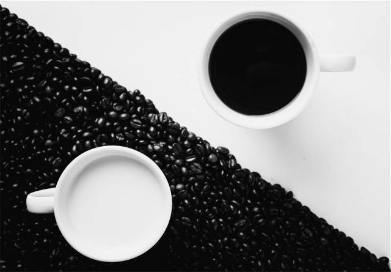

Kopi adalah minuman hasil seduhan biji kopi yang telah melalui proses roasting dan dihaluskan menjadi bubuk. Jenis kopi yang beredar secara luas adalah arabika, robusta, dan liberika. Kopi merupakan minuman ke-2 terpopuler di dunia setelah teh. Bagi banyak orang, kopi bukan sekedar minuman selingan tapi adalah bagian dari gaya hidup.
 Tidak hanya sebagai komoditas ekspor, kopi bagi masyarakat Indonesia sudah menjadi budaya yang sulit dipisahkan. Masyarakat Indonesia yang beragam menghasilkan banyak sajian kopi khas Indonesia yang tidak lagi hanya dinikmati oleh masyarakat lokal. Beberapa sajian kopi khas yang populer, yaitu kopi tubruk, kopi joss, dan kopi hijau.